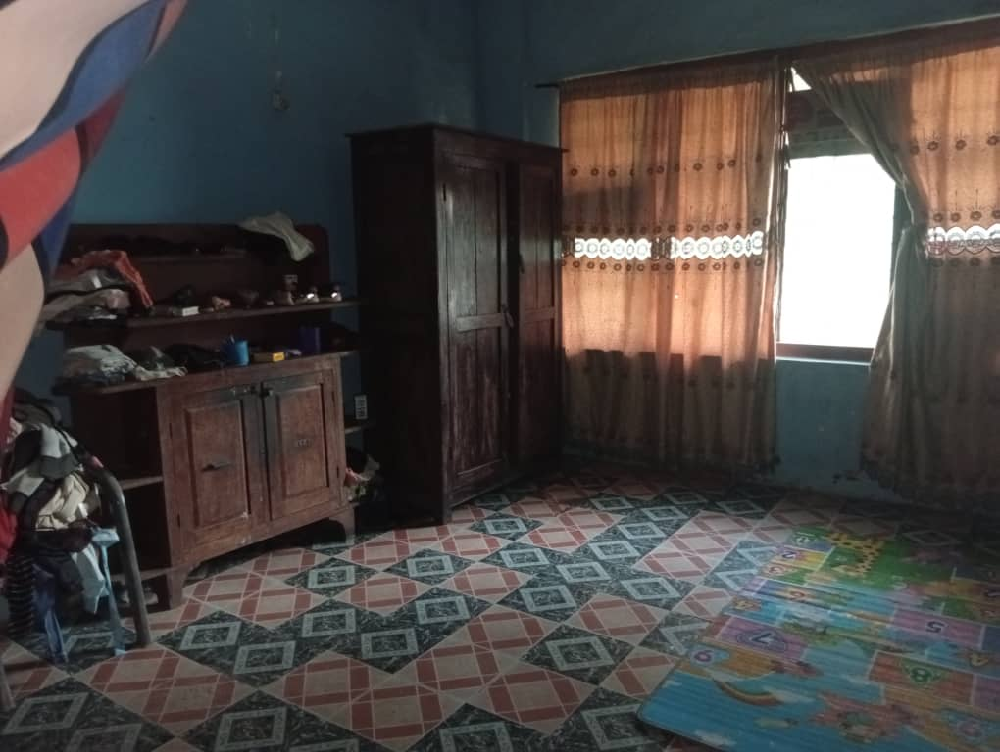

Raccolta fondi in corso
È attiva la raccolta «Costruiamo la missione»: obiettivo 39.000 € entro marzo 2027 per lavori preliminari, fondamenta, muratura, solaio e copertura.
Suor Florence accoglie bambini in difficoltà e ragazze madri. La missione va ricostruita da zero — e possiamo farcela insieme.
La Culla è un'associazione senza scopo di lucro costituita a Roma il 28 maggio 2026, con domanda di iscrizione al Registro Unico Nazionale del Terzo Settore (RUNTS) in corso di istruttoria. È apartitica, aconfessionale, laica e indipendente, e opera nel rispetto della libertà di coscienza e di religione.
Perseguiamo finalità civiche, solidaristiche e di utilità sociale a favore di minori, donne e famiglie in condizioni di vulnerabilità, in Italia e all'estero.
Operiamo esclusivamente grazie al volontariato: tutte le cariche sono gratuite e nessun compenso, indennità o gettone è corrisposto ad amministratori o soci.
Il 100% delle donazioni è destinato al progetto. Ogni trasferimento di fondi avviene tramite canali bancari tracciati ed è rendicontato in modo trasparente.

Fondata e guidata da Suor Florence, la Comunità «Piccoli Amici di Gesù e Maria» opera in un villaggio vicino a Ehime Mbano, nello Stato di Imo, nel sud-est della Nigeria. Da anni accoglie bambini in difficoltà e ragazze madri, offrendo istruzione, cura quotidiana e un riferimento sicuro.
Oggi circa 30 persone vivono nella missione e 200 bambini frequentano la scuola, in strutture ormai inadeguate. Il terreno è già acquistato: va costruito l'edificio — scuola al piano terra, alloggi al piano superiore.
L'acquisto del terreno è già stato completato. Obiettivo della raccolta: 39.000 € entro marzo 2027, quando la nuova casa dovrà essere pronta ad accogliere la Comunità. Cantiere previsto: circa 12 mesi.
Intestato a La Culla
IT95 U034 4003 2130 0000 0497 300
Causale: «Erogazione liberale — Costruiamo la missione».
L'associazione ha presentato domanda di iscrizione al RUNTS: a iscrizione perfezionata le erogazioni liberali effettuate con strumenti di pagamento tracciabili saranno detraibili o deducibili ai sensi dell'art. 83 del D.Lgs. 117/2017. Fino a quel momento non è possibile garantire il beneficio fiscale: conserva la contabile del bonifico e la ricevuta che ti rilasceremo.
Codice Fiscale: 96660860584
Per ogni donazione l'associazione rilascia regolare ricevuta. Nessuna spesa di gestione: il 100% delle donazioni è destinato al progetto.
È attiva la raccolta «Costruiamo la missione»: obiettivo 39.000 € entro marzo 2027 per lavori preliminari, fondamenta, muratura, solaio e copertura.
La prima fase del progetto è completata: il terreno su cui sorgerà la nuova missione, vicino a Ehime Mbano, è stato acquistato. Ora si parte con il cantiere.
Il 28 maggio 2026 sei soci fondatori hanno costituito a Roma l'associazione La Culla, per dare una forma stabile e trasparente al sostegno della missione di Suor Florence.
Possono diventare soci le persone maggiorenni che condividono le finalità dell'associazione. La quota associativa per il 2026 è di 50 € annui (intrasmissibile e non rivalutabile; a differenza delle donazioni, la quota non è fiscalmente detraibile). Il Consiglio Direttivo delibera sull'ammissione entro 60 giorni dalla domanda.
In coerenza con il D.Lgs. 117/2017 e con la Legge 124/2017, l'associazione pubblica le informazioni sulla propria gestione anche prima del perfezionamento dell'iscrizione al RUNTS.
Vuoi diventare socio, fare volontariato o organizzare un'iniziativa di raccolta fondi con noi? Scrivici: ogni aiuto, di tempo o di risorse, contribuisce a costruire la nuova casa della missione.